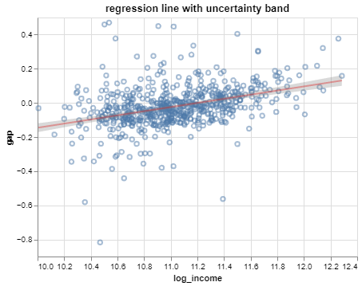

array([0.01929165])PSTAT100 Spring 2023
Week 8, Lecture 1
Simple linear regression model:
\[ y_i = \beta_0 + \beta_1 x_i + \epsilon_i \quad \begin{cases} i = 1, \dots, n \\ \epsilon_i \sim N\left(0,\sigma^2\right) \end{cases} \]
Example using the SEDA data:
\[ \left(\text{math gap}\right)_i = \beta_0 + \beta_1 \log\left(\text{median income}\right)_i + \epsilon_i \quad \text{district } i = 1, \dots, 625 \]

Uncertainty bands are a common visualization technique for conveying variability in estimates.
The line we are visualizing shows model predictions across the range of the data:
\[ \hat{y} = \hat{\beta}_0 + \hat{\beta}_1 x \;,\quad x \in [x_\text{min}, x_\text{max}] \]
If for example, we’d like to make a prediction for a district with a median income of 86K, we’d calculate:
\[ \hat{\beta}_0 + \hat{\beta}_1\log(86000) \]
In statsmodels, there is a .predict method to perform this basic calculation:
Note that this returns a numpy array. The uncertainty bands are intervals constructed around such predictions for a fine grid of values on the interval \([x_\text{min}, x_\text{max}]\).
The prediction \(\hat{y}\) is an estimate, but what of?
Two options:
\[ \mathbb{E}y = \beta_0 + \beta_1 x \]
\[ y = \beta_0 + \beta_1 x + \epsilon \]
If we interpret \(\hat{y}\) as a prediction for the mean, the standard error is based on:
\[ \text{var}\left(\hat{\beta}_0 + \hat{\beta}_1 x\right) = \text{var}\hat{\beta}_0 + x^2 \text{var}\hat{\beta}_1 + 2x\text{cov}\left(\hat{\beta}_0 + \hat{\beta}_1\right) \]
To get the standard error (estimated standard deviation), substitute \(\hat{\sigma}^2\) for \(\sigma^2\) and take the square root.
If instead we interpret \(\hat{y}\) as a prediction for a new observation, the standard error is based on:
\[ \text{var}\left(\hat{\beta}_0 + \hat{\beta}_1 x + \epsilon\right) = \text{var}\hat{\beta}_0 + x^2 \text{var}\hat{\beta}_1 + 2x\text{cov}\left(\hat{\beta}_0 + \hat{\beta}_1\right) + \text{var}\epsilon \]
The above holds because we assume the future random error is independent of current observations (and thus the estimates).
To get the standard error (estimated standard deviation), substitute \(\hat{\sigma}^2\) for \(\sigma^2\) and take the square root.
The .get_prediction() returns a prediction object with several attributes, including standard errors. This is recommended over .predict() for most purposes.
<statsmodels.regression._prediction.PredictionResults at 0x206f7c23b20>The variance of the estimated mean at \(\mathbf{x}_{new}\) is:
\[ \text{var}(\widehat{\mathbb{E}y_\text{new}}) = \mathbf{x}_\text{new} \; \underbrace{ \left[\sigma^2 (\mathbf{X'X})^{-1}\right] }_{ \text{var}\hat{\beta} }\; \mathbf{x}_\text{new}' \]
So the standard error is obtained by substituting \(\hat{\sigma}\) for \(\sigma\):
\[ SE\left(\widehat{\mathbb{E}y_\text{new}}\right) = \sqrt{\hat{\sigma}^2\left(\mathbf{x}_\text{new}'(\mathbf{X'X})^{-1}\mathbf{x}_\text{new}\right)} \]
The variance of a predicted observation at \(\mathbf{x}_{new}\) is:
\[ \text{var}(y_\text{new}) = \underbrace{ \mathbf{x}_\text{new} \left[\hat{\sigma}^2 (\mathbf{X'X})^{-1}\right] \mathbf{x}_\text{new}' }_{SE^2\left(\widehat{\mathbb{E}y_\text{new}}\right)} + \hat{\sigma}^2 \]
So the standard error is obtained by substituting \(\hat{\sigma}\) for \(\sigma\):
\[ SE\left(y_\text{new}\right) = \sqrt{\hat{\sigma}^2\left(1 + \mathbf{x}_\text{new}'(\mathbf{X'X})^{-1}\mathbf{x}_\text{new}\right)} \]
Note the substantial difference between the standard error for the mean and that for the observation:
print('standard error for mean: ', pred.se_mean)
print('standard error for observation: ', pred.se_obs)standard error for mean: [0.00605441]
standard error for observation: [0.11492531]Why is one so much larger??
There is only one source of variability for a predicted mean:
There are two sources of variability for a predicted observation:
The standard error for the mean is smaller, because it’s easier to estimate the average value for a given \(x\) than the exact value:
The two standard errors will differ substantially whenever there is a lot of unexplained variability (\(low R^2\)).
The uncertainty bands from before were \(\hat{y} \pm 2SE(\hat{y})\)
Technically, a confidence interval; usually shown for the mean (not the observation).
# compute predictions at observed values
preds = slr.fit().get_prediction(x)
# append fitted values to observations
regdata['fitted'] = preds.predicted_mean
# add interval bounds
regdata['lwr_mean'] = preds.predicted_mean - 2*preds.se_mean
regdata['upr_mean'] = preds.predicted_mean + 2*preds.se_mean
scatter = alt.Chart(regdata).mark_circle().encode(
x = alt.X('log_income',
scale = alt.Scale(zero = False),
title = 'log median income'),
y = alt.Y('gap', title = 'math achievement gap')
)
trend = alt.Chart(regdata).mark_line(
color = 'black'
).encode(
x = 'log_income',
y = 'fitted'
)
band = alt.Chart(regdata).mark_area(
opacity = 0.3, color = 'black'
).encode(
x = 'log_income',
y = 'upr_mean',
y2 = 'lwr_mean'
)
(scatter + trend + band).configure_axis(
labelFontSize = 16,
titleFontSize = 18
)The same figure constructed using the standard error for observations is:
# add interval bounds
regdata['lwr_obs'] = preds.predicted_mean - 2*preds.se_obs
regdata['upr_obs'] = preds.predicted_mean + 2*preds.se_obs
scatter = alt.Chart(regdata).mark_circle().encode(
x = alt.X('log_income',
scale = alt.Scale(zero = False),
title = 'log median income'),
y = alt.Y('gap', title = 'math achievement gap')
)
trend = alt.Chart(regdata).mark_line(
color = 'black'
).encode(
x = 'log_income',
y = 'fitted'
)
band = alt.Chart(regdata).mark_area(
opacity = 0.3, color = 'black'
).encode(
x = 'log_income',
y = 'upr_obs',
y2 = 'lwr_obs'
)
(scatter + trend + band).configure_axis(
labelFontSize = 16,
titleFontSize = 18
)Prediction objects come equipped with a method .conf_int() for computing confidence intervals.
By default, these will return 95% intervals for the mean. For the prediction at median income of 86K:
Interpretation:
With 95% confidence, the mean achievement gap for a district with median income of 86K is estimated to favor boys by between 0.0074 and 0.0312 standard deviations from the national average.
The same method can return prediction intervals for observations. Set obs = True to use the standard error for observations:
Interpretation:
With 95% confidence, the precise achievement gap for a district with median income of 86K is estimated to be between 0.206 standard deviations favoring girls and 0.245 standard deviations favoring boys.
The multiplier 2 gives an approximate 95% interval.
We can change that multiplier to obtain an interval for a different confidence level.
The confidence level is simply the percentage of the time that the interval covers the true value.
.summary_frame()The .summary_frame() method is handy for dealing with multiple predictions:
# explanatory variable array for 4 new observations
income_new = np.linspace(10000, 100000, 4)
x_new = sm.tools.add_constant(np.log(income_new))
# compute predictions
pred = slr.fit().get_prediction(x_new)
# generate point estimates and intervals
pred_df = pred.summary_frame(alpha = 0.1)
pred_df['log_income'] = np.log(income_new)
pred_df| mean | mean_se | mean_ci_lower | mean_ci_upper | obs_ci_lower | obs_ci_upper | log_income | |
|---|---|---|---|---|---|---|---|
| 0 | -0.241194 | 0.022020 | -0.277468 | -0.204920 | -0.433697 | -0.048692 | 9.210340 |
| 1 | -0.073374 | 0.006875 | -0.084699 | -0.062048 | -0.262766 | 0.116019 | 10.596635 |
| 2 | -0.005628 | 0.004832 | -0.013589 | 0.002332 | -0.194850 | 0.183593 | 11.156251 |
| 3 | 0.037550 | 0.007345 | 0.025450 | 0.049649 | -0.151891 | 0.226991 | 11.512925 |
A summary dataframe computed on a prediction grid returns the raw materials needed to plot uncertainty bands of different levels/types.
Which is the prediction band and which is the mean? Why?
# construct prediction grid
income_grid = np.logspace(start = 10, stop = 12.5, num = 200, base = np.e)
x_grid = sm.tools.add_constant(np.log(income_grid))
# compute predictions
preds = slr.fit().get_prediction(x_grid)
pred_df = preds.summary_frame(alpha = 0.01)
pred_df['log_income'] = np.log(income_grid)
# visualization
trend = alt.Chart(pred_df).mark_line(
color = 'black'
).encode(
x = 'log_income',
y = 'mean'
)
band = alt.Chart(pred_df).mark_area(
opacity = 0.3, color = 'black'
).encode(
x = 'log_income',
y = 'mean_ci_lower',
y2 = 'mean_ci_upper'
)
(scatter + trend + band).configure_axis(
labelFontSize = 14,
titleFontSize = 16
)# construct prediction grid
income_grid = np.logspace(start = 10, stop = 12.5, num = 200, base = np.e)
x_grid = sm.tools.add_constant(np.log(income_grid))
# compute predictions
preds = slr.fit().get_prediction(x_grid)
pred_df = preds.summary_frame(alpha = 0.2)
pred_df['log_income'] = np.log(income_grid)
# visualization
trend = alt.Chart(pred_df).mark_line(
color = 'black'
).encode(
x = 'log_income',
y = 'mean'
)
band = alt.Chart(pred_df).mark_area(
opacity = 0.3, color = 'black'
).encode(
x = 'log_income',
y = 'obs_ci_lower',
y2 = 'obs_ci_upper'
)
(scatter + trend + band).configure_axis(
labelFontSize = 14,
titleFontSize = 16
)Which is the 99% band and which is the 85% band? Why?
# construct prediction grid
income_grid = np.logspace(start = 10, stop = 12.5, num = 200, base = np.e)
x_grid = sm.tools.add_constant(np.log(income_grid))
# compute predictions
preds = slr.fit().get_prediction(x_grid)
pred_df = preds.summary_frame(alpha = 0.01)
pred_df['log_income'] = np.log(income_grid)
# visualization
trend = alt.Chart(pred_df).mark_line(
color = 'black'
).encode(
x = 'log_income',
y = 'mean'
)
band = alt.Chart(pred_df).mark_area(
opacity = 0.3, color = 'black'
).encode(
x = 'log_income',
y = 'mean_ci_lower',
y2 = 'mean_ci_upper'
)
(scatter + trend + band).configure_axis(
labelFontSize = 14,
titleFontSize = 16
)# construct prediction grid
income_grid = np.logspace(start = 10, stop = 12.5, num = 200, base = np.e)
x_grid = sm.tools.add_constant(np.log(income_grid))
# compute predictions
preds = slr.fit().get_prediction(x_grid)
pred_df = preds.summary_frame(alpha = 0.15)
pred_df['log_income'] = np.log(income_grid)
# visualization
trend = alt.Chart(pred_df).mark_line(
color = 'black'
).encode(
x = 'log_income',
y = 'mean'
)
band = alt.Chart(pred_df).mark_area(
opacity = 0.3, color = 'black'
).encode(
x = 'log_income',
y = 'mean_ci_lower',
y2 = 'mean_ci_upper'
)
(scatter + trend + band).configure_axis(
labelFontSize = 14,
titleFontSize = 16
)How good are the predictions?
The standard measure of accuracy is mean square error (MSE):
\[ MSE(y, \hat{y}) = \frac{1}{n}\sum_i (y_i - \hat{y}_i)^2 \]
Similar to a variance, but measures the spread of observations about the predictions rather than their spread about the sample mean.
MSE is an estimate of \(\mathbb{E}(y - \hat{y})^2\).
For genuine predictions, \(y_i\) and \(\hat{y}_i\) are uncorrelated, because:
As a result one can show:
\[ \mathbb{E}(y_i - \hat{y}_i)^2 = \text{var}\epsilon_i + \text{var}\hat{y}_i \]
If fitted values are used to calculate MSE, \(y_i\) and \(\hat{y}_i\) will be correlated, and MSE will be biased.
Another way of understanding: the model will have an advantage on the data that it was fit to.
To avoid this problem, it is common practice to partition data into nonoverlapping subsets:
# grab 100 rows at random
np.random.seed(51823)
idx = np.random.choice(regdata.index.values, size = 100, replace = False).tolist()
# partition dataset
test = regdata.loc[idx]
train = regdata.drop(index = idx)
# fit model to training subset
x_train = sm.tools.add_constant(train.log_income)
y_train = train.gap
slr_part = sm.OLS(endog = y_train, exog = x_train)Note that the coefficient estimates are a little different:
fit to full data: [-1.35616996 0.12105696]
fit to training partition: [-1.15627389 0.10319151]As are the error variance estimates:
# compute predictions
x_test = sm.tools.add_constant(test.log_income)
preds = slr_part.fit().get_prediction(x_test)
y_hat = preds.predicted_mean
# prediction errors
pred_errors = test.gap - y_hat
# mean square error
mse = (pred_errors**2).mean()
# square root, for interpretability
rmse = np.sqrt(mse)
print('root mean square error: ', rmse)root mean square error: 0.14377667235816577Interpretation:
The model predictions vary about observed values with a standard deviation of 0.144 (SD of national average).
Compare with MSE computed using fitted values:
rmse on training partition: 0.10843963485562963
rmse on test partition: 0.14377667235816577Note that ‘training MSE’ – MSE computed using the fitted values – is simply the estimate of the error variance, rescaled by \(\frac{n - 1}{n}\).
Since the model is fit by minimizing this quantity, out-of-sample predictions are absolutely necessary to get a good sense of the predictive reliability.
We’ll extend the simple linear regression model to multiple explanatory variables.